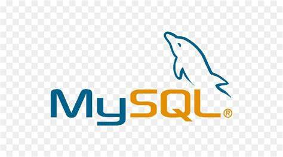

Introduced in the 1970s, SQL offered two main advantages over older read–write APIs such as ISAM or VSAM. Firstly, it introduced the concept of accessing many records with one single command. Secondly, it eliminates the need to specify how to reach a record, i.e., with or without an index. Originally based upon relational algebra and tuple relational calculus, SQL consists of many types of statements,[6] which may be informally classed as sublanguages, commonly: Data query Language (DQL), Data Definition Language (DDL), Data Control Language (DCL), and Data Manipulation Language (DML).[7] The scope of SQL includes data query, data manipulation (insert, update, and delete), data definition (schema creation and modification), and data access control. Although SQL is essentially a declarative language (4GL), it also includes procedural elements. SQL was one of the first commercial languages to use Edgar F. Codd's relational model. The model was described in his influential 1970 paper, "A Relational Model of Data for Large Shared Data Banks".[8] Despite not entirely adhering to the relational model as described by Codd, SQL became the most widely used database language
